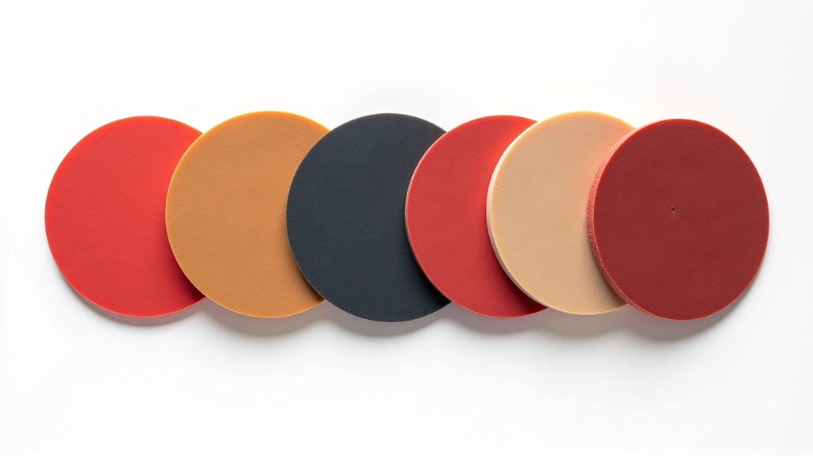

اختيار السطح المناسب حسب أسلوب لعبك
تعرف على كيفية اختيار السطح المناسب بناءً على أسلوب لعبك سواء كنت لاعب هجوم أم دفاع، وكيف يؤثر اختيارك على أدائك في المباراة

لماذا اختيار السطح يحدث الفرق
السطح ليس مجرد الجزء الملون من المضرب — إنه القلب النابض لأسلوبك في اللعب. الفرق بين لاعب يختار السطح بعناية ولاعب يختار عشوائياً يمكن أن يكون الفارق بين الفوز والخسارة.
كل لاعب لديه أسلوب فريد — البعض يحب الهجوم السريع، والآخرون يفضلون الدفاع الصلب والتحكم. السطح المناسب يعزز نقاط قوتك ويقلل من نقاط ضعفك. هذا الدليل سيساعدك على فهم كيف تختار السطح الذي يناسبك فعلاً.
أنواع رئيسية من الأسطح
أسلوب أساسي للعب
معايير اختيار حاسمة
أسطح لاعب الهجوم
إذا كنت لاعب هجوم، فأنت تبحث عن السرعة والقوة. تريد كراة تغادر المضرب بسرعة عالية وتنقل الضغط على منافسك. الأسطح السريعة (التي تُقاس عادة بـ 40+ درجة) هي صديقك الأفضل.
السطح السريع (40+ درجة)
يوفر ردود فعل سريعة وكرة أسرع. مثالي للضربات الهجومية المباشرة والإنهاءات السريعة.
الأسطح اللاصقة
توفر قبضة إضافية للتحكم في الكرات الدوارة العالية. تساعد على تحويل الضغط إلى هجمات حادة.
الأسطح المتوازنة
تجمع بين السرعة والتحكم. جيدة للاعبين الذين يريدون القدرة على الهجوم والدفاع معاً.
نصيحة عملية: إذا كنت تبدأ للتو في الهجوم، ابدأ بسطح متوازن بدرجة حوالي 38-40. يعطيك المرونة أثناء تطوير تقنيتك.
أسطح لاعب الدفاع
الدفاع ليس ملل — إنه فن. كلاعب دفاع، تريد سطحاً يعطيك التحكم والثبات والقدرة على الرد على أي شيء. الأسطح الأبطأ (أقل من 40 درجة) تمنحك الوقت والدقة التي تحتاجها.
السطح البطيء (أقل من 40 درجة)
يوفر وقتاً أطول للرد والتحكم الدقيق. الكرة تبقى على المضرب قليلاً أطول، ما يعطيك حرية في وضع الدوران والتوجيه.
- تحكم عالي جداً
- ردود أطول على الكرات السريعة
- قدرة عالية على إضافة الدوران
الأسطح المتوسطة (38-40 درجة)
خيار وسطي يسمح بالدفاع الفعال مع بعض القدرات الهجومية. تحسين على السطح البطيء البحت للدفاعيين الذين يريدون نقاط هجومية أحياناً.
- توازن جيد بين السرعة والتحكم
- مرونة أكبر في الأسلوب
- أسهل في الانتقال للهجوم
اللاعب الدفاعي الجيد لا يخسر — يتعب الخصم. عندما يكون لديك السطح المناسب، تصبح جدار من الحديد. الضربات الطويلة، الردود الثابتة، والصبر — هذا أسلوب الدفاع الحقيقي.
كيفية اختيار السطح الصحيح — خطوة بخطوة
الآن بعد فهمك للفرق، كيف تختار فعلياً؟ اتبع هذه الخطوات البسيطة:
حدد أسلوبك
انظر بصراحة إلى كيف تلعب. هل تحب الهجوم والإنهاءات السريعة؟ أم تفضل الصبر والتحكم؟ ربما أنت مختلط يجمع بين الاثنين. هذا هو نقطة البداية.
ابدأ بالأسطح المتوازنة
إذا كنت جديداً، اختر سطحاً متوازناً (38-40 درجة). يعطيك المرونة لتطوير مهاراتك دون تقييد نفسك. بعد بضعة أشهر من اللعب، ستعرف ما تحتاج حقاً.
اختبر قبل الشراء
اطلب من أصدقاء لاعبين تجربة مضاربهم. استعير سطحاً مختلفاً في التدريب. الإحساس مهم جداً — الأرقام مهمة لكن الراحة الشخصية تأتي أولاً.
تعرف على المواد
الأسطح اللاصقة تحتاج صيانة أكثر. الأسطح الاصطناعية تدوم أطول. الأسطح المسامية توفر حساسية أعلى. فهم هذه الاختلافات يساعدك على اتخاذ قرار مستنير.
استثمر في الجودة
سطح رديء يحبط لاعباً جيداً. لا تحتاج إلى أغلى ماركة، لكن اختر سطحاً معروفاً من علامة تجارية موثوقة. الفرق بين سطح بـ 30 جنيه وسطح بـ 80 جنيه كبير جداً.

معايير إضافية يجب أن تأخذها في الاعتبار
درجة الصلابة (Hardness)
تُقاس من 30 إلى 50 درجة. السطح الأصلب (40+) يعطي ردود فعل أسرع. السطح الأنعم (أقل من 40) يعطي مزيداً من التحكم والإحساس. اختيارك يعتمد على قوة ذراعك وتفضيلك الشخصي.
سمك السطح
السطح الأسمك (2 ملم) يوفر توسيد أفضل وتحكم. السطح الأرقق (1.5 ملم) يعطي إحساس أفضل بالكرة. لاعبو الهجوم غالباً يختارون أرق. لاعبو الدفاع يختارون أسمك.
مستوى الدوران (Spin)
الأسطح اللاصقة توفر دوران عالي جداً. الأسطح الاصطناعية أقل في الدوران لكن أسهل في الصيانة. إذا كان الدوران أولويتك، اختر اللاصق. إذا كنت تريد راحة، اختر الاصطناعي.
الصيانة والعمر الافتراضي
الأسطح اللاصقة تحتاج تنظيف بعد كل جلسة تدريب. الأسطح الاصطناعية أقل متطلباً. متوسط عمر السطح من 6 إلى 12 شهر حسب الاستخدام. خطط ميزانيتك بناءً على هذا.
الميزانية والقيمة
لا تربط الثمن بالجودة دائماً. أغلى سطح ليس دائماً الأفضل لك. ابحث عن قيمة جيدة — سطح موثوق بسعر معقول. الاستثمار في ماركات معروفة يعطيك ضمان الجودة والمتانة.
مستوى اللعب والتطور
المبتدئون يستفيدون من الأسطح المتسامحة والمتوازنة. اللاعبون المتقدمون يمكنهم استخدام أسطح متخصصة. بينما تتقدم، قد تغير سطحك عدة مرات. هذا طبيعي وجزء من التطور.
الفكرة الرئيسية: لا يوجد سطح "أفضل" عام. الأفضل هو ما يناسبك أنت — أسلوبك وقوتك وتفضيلاتك الشخصية. حتى لاعب محترف قد لا يشعر بالراحة مع السطح الذي يستخدمه لاعب آخر.
الخلاصة والخطوات التالية
اختيار السطح المناسب ليس قرار معقد كما قد يبدو. الخطوات بسيطة: افهم أسلوبك، ابدأ بسطح متوازن، اختبر قبل الشراء، وتعلم عن المواد والمواصفات. مع الوقت، ستطور حساسية لما يناسبك.
تذكر أن السطح ليس كل شيء. التقنية الجيدة والتدريب المنتظم والموقف الصحيح مهمة أكثر. لكن عندما يكون لديك السطح الذي يناسبك فعلاً، ستلاحظ الفرق — الكرة تشعر أفضل، ردود فعلك أسرع، وثقتك تزداد.
الخطوات التالية:
- حدد أسلوبك الفعلي من خلال ملاحظة لعبك
- ابحث عن ماركات موثوقة متوفرة محلياً
- اطلب من مدرب أو لاعب متقدم نصيحة شخصية
- اختبر سطحاً متوازناً لفترة 4-6 أسابيع قبل تغييره
- ابقَ منفتح العقل — تفضيلاتك قد تتغير مع تقدمك
"السطح المناسب يشعرك أنك لاعب أفضل. لا تستعجل هذا الاختيار."
تنويه تحريري
هذا الدليل يقدم معلومات عملية وتوصيات تعليمية حول اختيار أسطح تنس الطاولة. النصائح المقدمة هنا مبنية على الخبرة العامة والممارسات الشائعة في الرياضة. تذكر أن كل لاعب فريد، والتفضيلات الشخصية والاحتياجات الفردية قد تختلف. نحن لا نضمن نتائج معينة أو تحسناً محدداً في الأداء من خلال اتباع هذه التوصيات.
المعلومات الواردة هنا لأغراض تعليمية فقط ولا تعتبر نصيحة احترافية شخصية. يُنصح باستشارة مدرب متخصص أو متخصص في المعدات قبل اتخاذ قرارات مهمة بشأن معدات تنس الطاولة الخاصة بك.